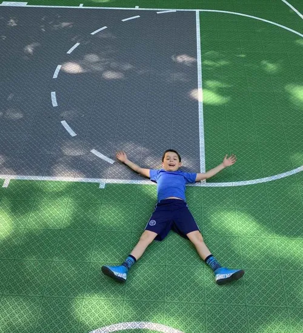
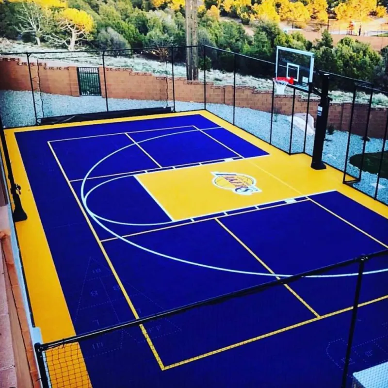
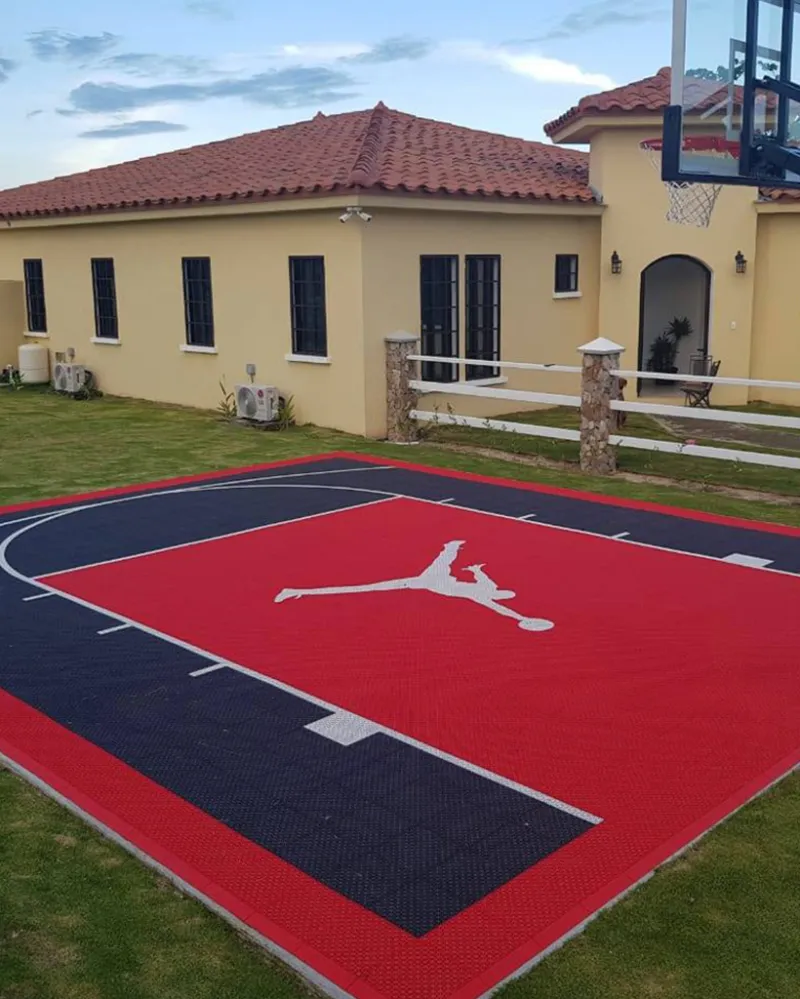
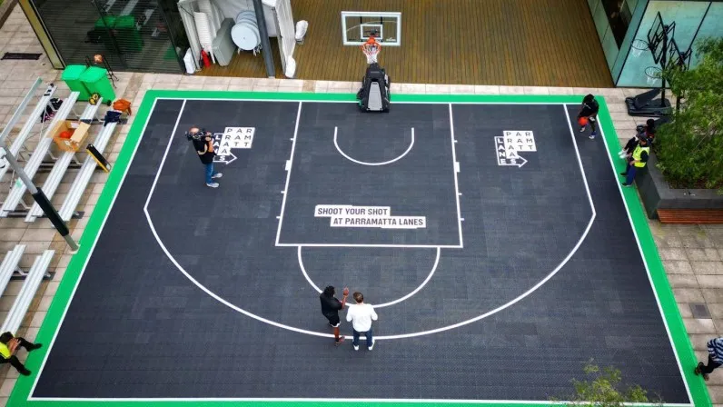
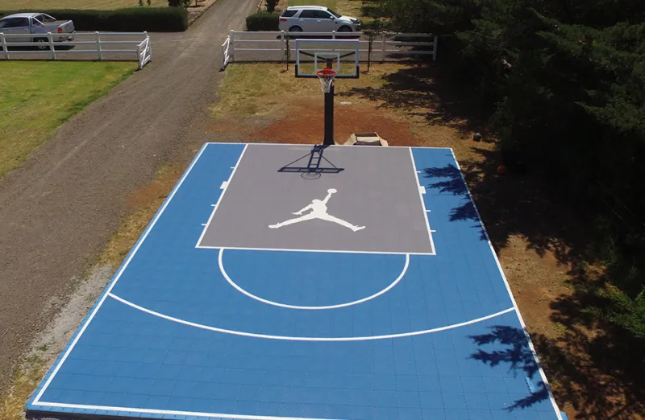
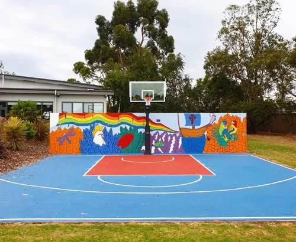

Sportowy plac zabaw w Twoim ogrodzie. System zatrzaskowy — bez kleju, bez narzędzi, bez ekipy. Koszykówka, siatkówka, badminton pod domem.
Zamarz o własnym boisku sportowym? Z nawierzchnią NS Pro budujesz je samodzielnie w kilka godzin — bez ekipy budowlanej, bez kleju, bez specjalistycznych narzędzi. Panele łączą się na zatrzaski click-lock, a Ty wybierasz rozmiar, kształt i kolory.
Koszykówka, siatkówka, badminton, mini-tenis, hokej na rolkach — wszystko na jednej nawierzchni odpornej na deszcz, mróz do -40°C i promieniowanie UV. Idealne dla rodzin z dziećmi, sportowców-amatorów i miłośników sportu, którzy chcą trenować pod własnym domem.
Sport w ogrodzie zamiast wyjazdu na halę. Zdrowie, frajda, integracja rodziny.
System zatrzasków click-lock pozwala na instalację w kilka godzin. Bez kleju, bez narzędzi, bez ekipy budowlanej. Wystarczy wyrównane, utwardzone podłoże.
Elastyczny materiał amortyzuje upadki i chroni stawy. Antypoślizgowa powierzchnia zapewnia bezpieczeństwo dzieciom i dorosłym, nawet po deszczu.
100% odporności na deszcz, mróz do -40°C i promieniowanie UV. Nawierzchnia nie pęka, nie blaknie i nie wymaga sezonowej konserwacji.
Stwórz unikalny projekt dopasowany do ogrodu. Łącz kolory, twórz strefy gry, oznaczaj linie boiskowe — wybór należy do Ciebie.
Brak malowania, podlewania ani sezonowej konserwacji. Mycie wodą to wszystko. Więcej czasu na grę, mniej na utrzymanie.
Boisko 3×3m do badmintona, 5×8m do mini-koszykówki, 10×15m do pełnowymiarowej siatkówki — dostosujemy do Twojego ogrodu.





Skontaktuj się z nami, aby otrzymać bezpłatną wycenę. Pomożemy dobrać rozmiar, kolory i konfigurację — żebyś już za kilka tygodni mógł grać w swoim ogrodzie.
Bezpłatna wycena